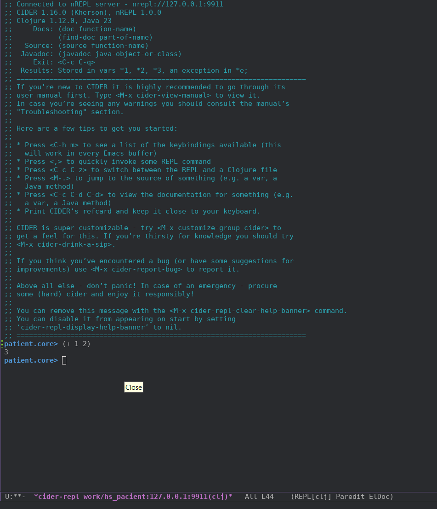

2024-10-11
Давно задумывался о том чтобы написать что-нибудь на чём-то вроде Lisp (кажется, с тех пор как прочитал перевод статьи о том как ещё в 1996, в США, люди делали на нём что-то вроде интернет-магазинов и тех, кто писал на С/С++, за конкурентов вообще не считали :D (кстати, никто не даст ссылку на неё?)). Даже свою реализацию написал. Собственно, её я и думал использовать, и, заодно, доработать моменты которые вылезут в процессе. Но вот что мне это даст в плане возможностей поиска работы? Да, я лучше пойму как писать программы с большим количеством скобок :D, но не более, а надо бы ещё знать какие-либо инструменты, особенности языка и инструментов. В общем: может быть, когда-нибудь.
Я уже некоторое кол-во лет, периодически, посматриваю на Clojure и
Haskell, даже пробовал на втором писать hello-world'ы (и даже писать на
PHP в функциональном стиле, но это было: во-первых сложно читаемо,
во-вторых окружающие смотрели на код вот так :-[ ] а на
меня с сожалением %) ). Есть ещё сам Lisp Scheme и Racket, но, на
сколько я знаю, из функциональных языков, только Clojure и Haskell,
сейчас, хоть как-то используются за пределами университетов.
Note
Код смотреть тут - https://github.com/4irik/simple-clojure-web-app.
Реализовать CRUD-приложение с данными пациента.
Dataset:
Будем, как всегда, работать через Docker. Т.к. у нас, кроме самой
Clojure есть ещё и СУБД, то используем docker compose.
Посмотрим есть ли что среди Docker-образов. Есть, образ, даже, официальный - https://hub.docker.com/_/clojure. Читаем:
- leiningen
- The oldest and probably most common tool
этот подходит, берём последнюю версию. Сразу же берём и pgsql:
docker-compose.yml:
services:
app:
image: clojure:temurin-23-lein-alpine
restart: always
working_dir: /app
volumes:
- ./:/app
db:
image: postgres:17.0-alpine3.20
restart: always
# set shared memory limit when using docker-compose
shm_size: 128mb
# or set shared memory limit when deploy via swarm stack
#volumes:
# - type: tmpfs
# target: /dev/shm
# tmpfs:
# size: 134217728 # 128*2^20 bytes = 128Mb
ports:
- 5432:5432
environment:
POSTGRES_PASSWORD: pswd
POSTGRES_DB: patient_db
PGDATA: ./pgdata
Конфиг для postgres взял из примера на странице хаба.
Тут же накидаем Makefile:
help: ## Show this help
@printf "\033[33m%s:\033[0m\n" 'Available commands'
@awk 'BEGIN {FS = ":.*?## "} /^[a-zA-Z0-9_-]+:.*?## / {printf " \033[32m%-18s\033[0m %s\n", $$1, $$2}' $(MAKEFILE_LIST)
build: ## Build containers
docker compose build
up: ## Run application
docker compose up -d
down: ## Down application
docker compose down
restart: down up ## Restart application
shell: ## Shell at clojure docker
docker compose exec app bash
log: ## Show container logs
docker compose logs -fТ.к. в Clojure я новичок, то потребовалось некоторое время чтобы
понять что lein - это leiningen, сборщик проекта а не
какая-то специфическая версия кложи. Поначалу я искал в docker-образе
что-то вроде clojure и clj и не мог найти,
потом всё встало на свои места.
Заходим в docker-образ и создаём каркас приложения:
shell:
$ make start && make shell
$ lein new patientполучилось что-то вроде этого:
shell:
$ tree
.
├── CHANGELOG.md
├── LICENSE
├── Makefile
├── README.md
├── doc
│ └── intro.md
├── docker-compose.yml
├── project.clj
├── resources
├── src
│ └── patient
│ ├── core.clj
├── target
│ ├── classes
│ │ └── META-INF
│ │ └── maven
│ │ └── patient
│ │ └── patient
│ │ └── pom.properties
│ ├── repl-port
│ └── stale
│ └── leiningen.core.classpath.extract-native-dependencies
└── test
└── patient
└── core_test.clj
14 directories, 14 filesУ нас есть тесты, попробуем их запустить:
shell:
$ lein test
lein test patient.core-test
lein test :only patient.core-test/a-test
FAIL in (a-test) (core_test.clj:7)
FIXME, I fail.
expected: (= 0 1)
actual: (not (= 0 1))
Ran 1 tests containing 1 assertions.
1 failures, 0 errors.
Subprocess failed (exit code: 1)Хорошо, что-то уже работает. Добавим запуск тестов в
Makefile:
Makefile:
test: ## Run app tests
docker compose exec app lein testЗаглянем в файл core.clj:
core.clj:
(ns patient.core)
(defn foo
"I don't do a whole lot."
[x]
(println x "Hello, World!"))Для того чтобы у нас что-то скомпилировалось надо добавить функцию
-main:
core.clj:
(ns patient.core)
(defn -main
[& args]
(println "Hello, World!"))
(defn foo
;; ...Теперь попробуем это всё собрать и запустить:
shell:
$ lein run -m patient.core
Hello, World!Добавляем команду запуска в Makefile:
Makefile:
run: ## Run application
docker compose exec app lein run -m patient.coreУ меня уже стоял Emacs и даже был немного преднастроен. Уже не помню
для чего. Укажу часть init.el относящуюся к этому
проекту:
init.el:
(use-package cider
:ensure t)
(use-package clojure-mode
:ensure t)Хорошо бы добавить REPL. Нагуглил эту статью - https://grishaev.me/clj-repl-part-4/#nrepl-в-docker. Делаем по ней:
project.clj:
(defproject patient "0.1.0-SNAPSHOT"
;; ...
:profiles
{:docker
{:repl-options {:port 9911
:host "0.0.0.0"}
:plugins [[cider/cider-nrepl "0.50.2"]]}})docker-compose.yml:
services:
app:
command: ["lein", "with-profile", "+docker", "repl", ":headless"]Перезапускаем наш docker-образ и пытаемся присоединиться в emacs:
M-x cider-connect RET 127.0.0.1 RET 9911 RET
Отлично! Хорошо бы ещё не вводить эту строчку каждый раз когда нужен
REPL, но этим займёмся потом.
Собственно, т.к. писать я всё собрался на Clojure и ClojureScript, то, легче будет если решать задачи постепенно. Пока я ещё не знаю ни как писать фронт ни как писать бэк. Хочу начать с бэка, т.к. он мне более понятен (да и не будет ничего работать без него :D).
Если поискать как можно на Clojure сделать web-сервис то можно найти и примеры (к которым хорошо бы ещё иметь описание того что там и зачем) реализации и библиотеки которые многое на себя берут.
Мне хотелось бы собрать всё самому, так что в примеры я буду подглядывать а библиотеки, которые уже всё могут, использовать не буду, что бы, так сказать, лучше прочувствовать каково это.
Недолгий поиск привёл меня на страничку "Введение в веб-разработку на Clojure". В прошлый раз статья этого автора мне уже помогла когда я делал для своего REPL'а многострочный ввод (собственно и саму идею его сделать я оттуда почерпнул). Бегло прочитав статью решил что буду следовать ей.
Напишем начальную реализацию приложения:
core.clj:
;; ...
(defn app
[request]
(let [{:keys [uri request-method]} request]
{:status 200
:headers {"Content-Type" "text/plain"}
:body (format "You requested %s %s"
(name request-method)
uri)}))Чтобы проверить как эта функция работает нужно её скомпилировать, для
этого ставлю курсор на последнюю скобку и нажимаю C-x C-e,
затем перехожу в REPL (C-c C-z) и вызываем
её:
REPL:
patient.core> (app {:request-method :get :uri "/index.html"})
{:status 200,
:headers {"Content-Type" "text/plain"},
:body "You requested get /index.html"}Всё работает. Двигаемся дальше.
Добавим в зависимости два пакета:
project.clj:
;; ...
:dependencies [[org.clojure/clojure "1.12.0"]
;; base web-app
[ring/ring-core "1.12.2"]
;; web-server
[ring/ring-jetty-adapter "1.12.2"]
]Чтобы их скачать нужно запустить lein deps. Добавим
сразу эту команду в Makefile:
Makefile:
deps: ## Upload dependencies
docker compose exec app lein depsСделаем так, чтобы сервер стартовал при запуске нашего приложения
через lein.
core.clj:
;; ...
(require '[ring.adapter.jetty :refer [run-jetty]])
;; ...
(defn -main
[& args]
(run-jetty app {:port 8080 :join? true}))прокинем порт 8080 из докера во вне:
docker-compose.yml:
services:
app:
# ...
ports:
- 9911:9911
- 8080:8080и запустим наше приложение:
shell:
$ make restart && make run
Retrieving org/apache/commons/commons-parent/52/commons-parent-52.pom from central
Retrieving org/eclipse/jetty/jetty-project/11.0.21/jetty-project-11.0.21.pom from central
Retrieving com/fasterxml/jackson/jackson-bom/2.17.0/jackson-bom-2.17.0.pom from central
...
SLF4J: No SLF4J providers were found.
SLF4J: Defaulting to no-operation (NOP) logger implementation
SLF4J: See https://www.slf4j.org/codes.html#noProviders for further details.Ошибок нет, и если зайти на http://127.0.0.1:8080 то
увидим:
You requested get /Тут видно что функция app отработала вернув метод
запроса и URL.
Небольшое отступление к инфраструктуре:
Всё работает, но сейчас, т.к. я сижу с мобильного интернета, мне более важно другое: идёт скачивание всякого, скачивается всякое, естественно, в директорию внутри docker-образа, изменения в которой не сохраняются между запусками. Так мы каждый раз будем всё скачивать. Надо что-то делать. Всё в той же статье есть целых два решения:
/root/.m2 во вне:docker добавить параметр
:local-repoЕсли пойти по второму пути то нужно будет всё и всегда запускать с указанием этого профиля, иначе всё что будет скачиваться будет скачиваться внутрь docker-контейнера. Первый же путь избавляет от необходимости помнить о параметрах запуска чего бы то ни было. Выбираем его.
docker-compose.yml:
services:
app:
# ...
volumes:
- ./:/app
- ./.m2:/root/.m2Теперь возвращаемся к нашему web-приложению
Теперь, когда у нас что-то заработало, пора подумать о роутинге. Всё в той же статье автор описывает два варианта:
И чуть ниже пишет:
По субъективным ощущениям, с Compojure легче начать. У библиотеки достойная документация с примерами.
Мне этого достаточно. Выбираю Compojure.
project.clj:
(defproject patient "0.1.0-SNAPSHOT"
;; ...
:dependencies [
;; ...
[compojure "1.7.1"]
]
;; ...У меня уже есть в Makefile команда для установки зависимостей, так
что не нужно лезть в сам контейнер, достаточно отправить в shell
make deps.
Напишем базовые роуты для нашего приложения. Т.к. у нас CRUD то, для работы с данными пациентов, нам нужно:
Я разделил доступ к разной функциональности по HTTP-запросам чтобы проще было воспринимать, что каждый из запросов делает. Позже, возможно, я поменяю это.
Напишем функции-заглушки для этих методов:
core.clj:
(defn patient-list
[request]
{:status 200
:headers {"content-type" "text/plain"}
:body "list of patients"})
(defn patient-view
[request]
{:status 200
:headers {"content-type" "text/plain"}
:body "view patient data"})
;; ...Так, пока мы не ушли далеко, немного упростим себе жизнь. Каждая функция возвращает одну и ту же структуру:
{
:status 200
:headers {"content-type" "text/plain"}
:body "some string"
}в которой только значение кейворда :body различается.
Сделаем функцию-хэлпер:
core.clj:
(defn make-response
[response-string]
{:status 200
:headers {"content-type" "text/plain"}
:body response-string})
(defn patient-list
[request]
(make-response "list of patients"))
(defn patient-view
[request]
(make-response "view patient data"))
;;...Сразу же проверим её работу:
REPL:
patient.core> (make-response 123)
{:status 200, :headers {"content-type" "text/plain"}, :body 123}
patient.core> (patient-list [])
{:status 200,
:headers {"content-type" "text/plain"},
:body "list of patients"}Compojure предоставляет маркос для написания роутов -
defroutes, можно писать и без него, но получится немного
длиннее (пример с использованием маркоса и без него можно найти в документации).
Опишем наши роуты:
core.clj:
;;...
(require '[compojure.core :refer [GET POST PATCH DELETE defroutes]])
;; ...
(defroutes app
(GET "/" request (patient-list request))
(GET "/patient/:id" request (patient-view request))
(POST "/patient" request (patient-create request))
(PATCH "/patient/:id" request (patient-update request))
(DELETE "/patient/:id" request (patient-delete request))
page-404)Хм.. у нас тут есть группа роутов, это те что начинаются на
/patient, можно их объединить:
core.clj:
;; ...
;; в конец добавлен макрос `context`
(require '[compojure.core :refer [GET POST PATCH DELETE defroutes context]])
;; ...
(defroutes app
(GET "/" request (patient-list request))
(context "/patient" []
(POST "/" request (patient-create request))
(context "/:id{[0-9]+}" [id]
(GET "/" request (patient-view request))
(PATCH "/" request (patient-update request))
(DELETE "/" request (patient-delete request))
)
)
page-404)тут, как видно, добавился ещё 1 маркос - context, а так
же, я указал что id - это только цифры и он будет доступен
в нижестоящих роутах под кейвордом :id. Кстати, давайте
выведем этот самый :id в ответах роутов:
core.clj:
(defn patient-view
[request]
(when-let [user-id (-> request :params :id)]
(make-response (format "view patient #%s data" user-id))))
;; ...Проверим:
shell:
$ curl http://127.0.0.1:8080/patient/1
view patient #1 data
$ curl --request POST http://127.0.0.1:8080/patient
new patient createdКак видно, я использовал шаблон %s вместо
%d, это потому, что параметр :id - объект
класса String, позже я, думаю, ещё вернусь к этому моменту
и поменяю его на класс Integer.
Итого, сейчас имеем:
Оставшиеся два пункта пока оставлю, так же как и оставлю на потом работу с HATEOAS (тут я уже подумываю о том что это будет, всё-таки, REST-приложение).
Итак. Надо как-то хранить данные. В задании у нас указан PostgreSql, и я даже добавил его уже в docker-compose.yml, но пока что я не готов с головой окунуться в работу с ним. Хочется пока что сделать заглушку которая будет всё хранить в памяти.
Что, в итоге я хочу получить:
Я поставил знак вопроса в скобках у пунктов которые я не уверен что нужно делать или пока не знаю в каком виде я хочу их видеть.
Нашёл статью с
описанием как из го подручными средствами сделать себе
стор.
Пока что сделаю по аналогии без попытки вникнуть что там и как:
data.clj:
(ns patient.data)
;; "Tables"
(def patients (atom []))
;; "Schema"
(def patient-keys [:fio :sex :date-of-birth :address :oms-number])
(defn get-patients
[]
@patients)
(defn get-patient
[id]
(nth @patients id))
(defn put-patient!
[patient]
(swap! patients (conj patients patient)))Тут же попробуем это дело:
REPL:
patient.core> (ns patient.data)
nil
patient.data> (get-patients)
[]
patient.data> (put-patient! {:fio "Иванов И.И" :sex true :date-of-birth "10.10.1910" :address "Some address 11" :oms-number "11223344"})
Execution error (ClassCastException) at patient.data/put-patient! (form-init12253400653348000048.clj:19).
class clojure.lang.Atom cannot be cast to class clojure.lang.IPersistentCollection (clojure.lang.Atom and clojure.lang.IPersistentCollection are in unnamed module of loader 'app')Ну, функция get-patients работает, а вот со вставкой,
пока проблемы. Почитаем что там, вообще, в оригинальном посте делается
при вставке:
(def MAX-TWITS 5)
(def twits (atom []))
(def twit-keys [:name :message :timestamp])
(defn clean-twit [twit]
(-> twit
(select-keys twit-keys)
(assoc :timestamp (System/currentTimeMillis))))
(defn put-twit! [twit]
(swap! twits #(take MAX-TWITS (conj % (clean-twit twit)))))Так. Выдвинем предположения:
take берёт только MAX-TWITS из всего
набораconj - добавляет запись в конец вектораclean-twit - добавляет в твит текущее время в
миллисекундахswap! - обновляет вектор twitsтеперь выпишем непонятные вещи:
conj % ... - почему тут не twits и что
значит %?#(take ... - без понятия что эта запись означает.Я пытался найти что такое %, но ответ был в ответе на
другой вопрос - что такое #(.... Итак:
#(take ... - особая форма записи анонимной функции,
можно было бы писать (fn [arg ] ...)% - подстановка параметра в особой форме записи
анонимной функции, если бы параметров было несколько то они бы
обозначались цифрами - %1 %2 и т.д.Получается что #(take...) - анонимная функция, которая
принимает 1 аргумент и её результат подставляется вместо в
twits. Но откуда она берёт свой аргумент? Почитаем что там
пишут про
swap!:
(swap! atom f)
Atomically swaps the value of atom to be: (apply f current-value-of-atom args).
Т.е. наша анонимная функция будет применена к значению атома. Вот и ответ.
Хорошо, попробуем переписать функцию put-patient!:
data.clj:
(defn put-patient!
[patient]
(swap! patients #(conj % patient)))REPL:
patient.data> (put-patient! {:fio "Иванов И.И" :sex true :date-of-birth "10.10.1910" :address "Some address 11" :oms-number "11223344"})
[{:fio "Иванов И.И",
:sex true,
:date-of-birth "10.10.1910",
:address "Some address 11",
:oms-number "11223344"}]Работает! Вот только я всё равно не понял почему
(conj patients patient) не работает а
(conj % patient) делает то что нужно, пока буду
предполагать что % - это
current-value-of-atom, т.е. не сам атом а значение
содержащееся в нём. Кстати, как это можно проверить?
Нагуглил конструкцию defer (имеет сокращённую форму -
@) которая возвращает значение атома. Проверим:
REPL:
patient.data> (conj patients {:test "test"})
Execution error (ClassCastException) at patient.data/eval12859 (form-init12253400653348000048.clj:92).
class clojure.lang.Atom cannot be cast to class clojure.lang.IPersistentCollection (clojure.lang.Atom and clojure.lang.IPersistentCollection are in unnamed module of loader 'app')
patient.data> (conj @patients {:test "test"})
[{:fio "Иванов И.И",
:sex true,
:date-of-birth "10.10.1910",
:address "Some address 11",
:oms-number "11223344"}
{:test "test"}]Ну что ж, предположение оказалось верным. Но если посмотреть примеры в документации, то, кажется, что можно сделать ещё проще:
REPL:
patient.data> (swap! patients conj {:test "test"})
[{:fio "Иванов И.И",
:sex true,
:date-of-birth "10.10.1910",
:address "Some address 11",
:oms-number "11223344"}
{:test "test"}]Так и запишем в нашей функции добавления новых записей:
data.clj:
(defn put-patient!
[patient]
(swap! patients conj patient))data.clj:
(defn del-patient!
[id]
(swap! patients ???))И что же тут можно сделать? Первая мысль - filter, но он
работает только со значениями, а у меня индекс в векторе. Нашёл решение
на StackOverflow
- использовать subvec и concat! Попробуем,
сначала в общем виде:
REPL:
patient.data> (def m [0 1 2 3 4 5 6 7 8 9])
#'patient.data/m
patient.data> (#(vec (concat (subvec %1 0 %2) (subvec %1 (+ 1 %2)))) m 2)
(0 1 3 4 5 6 7 8 9)Работает, перенесём это в файл:
data.clj:
(defn del-patient!
[id]
(swap! patients #(vec (concat (subvec %1 0 %2) (subvec %1 (+ 1 %2)))) id))REPL:
;; посмотрим что у нас уже хранится
patient.data> (get-patients)
[{:fio "Иванов И.И",
:sex true,
:date-of-birth "10.10.1910",
:address "Some address 11",
:oms-number "11223344"}
{:test "test"}
{:fio "Петров П.П",
:sex true,
:date-of-birth "11.11.1911",
:address "Some address 222",
:oms-number "22334455"}]
;; удалим запись под индексом `1`
patient.data> (del-patient! 1)
[{:fio "Иванов И.И",
:sex true,
:date-of-birth "10.10.1910",
:address "Some address 11",
:oms-number "11223344"}
{:fio "Петров П.П",
:sex true,
:date-of-birth "11.11.1911",
:address "Some address 222",
:oms-number "22334455"}]
;; пропала запись `{:test "test"}`Тут наметилась проблема: если я удаляю запись то следующая за ней занимает её место, это создаст проблемы когда мы будем удалять записи через web-приложение потому как клиент не будет знать что идентификаторы записей поменялись, либо надо будет отправлять ему, каждый раз, новые идентификаторы.
Оставим её пока, вернёмся когда доделаем все CRUD операции. Кажется, что это решение добавит мне потом работы, но уж очень хочется продвинуться хоть немного вперёд.
Кажется что обновление записи очень похоже на удаление, с той только разницей что вместо удаляемого элемента нужно подставить новый:
data.clj:
(defn upd-patient!
[id patient]
(swap! patients #(vec (concat (subvec %1 0 %2) [%3] (subvec %1 (+ 1 %2)))) id patient))REPL:
;; заменим адрес у пациента номер 2
patient.data> (upd-patient! 1 {:fio "Петров П.П." :sex true :date-of-birth "11.11.1911" :address "new some address 333" :oms-number "22334455"})
[{:fio "Иванов И.И",
:sex true,
:date-of-birth "10.10.1910",
:address "Some address 11",
:oms-number "11223344"}
{:fio "Петров П.П.",
:sex true,
:date-of-birth "11.11.1911",
:address "new some address 333",
:oms-number "22334455"}]Работает, но есть две вещи которые мне не нравятся:
Попробуем, пока что, разобраться с проблемой №2.
Конструкция(?) assoc позволяет изменить значение в
отображении (map):
data.clj:
(defn change-patient-one-value!
"Изменят одно значение в записи пациента"
[item key new-value]
(assoc item key new-value))REPL:
patient.data> (change-patient-one-value! {:test "test"} :test "new value")
{:test "new value"}Дальше, кажется что можно получить на вход мапу с изменениями и, через её редукцию, обновить данные пациента:
data.clj:
(defn change-patient-values!
"Изменяет значения в записи пациента"
[patient new-values-map]
(reduce
#(let [key (%2 0) val (%2 1)] (change-patient-one-value! %1 key val))
patient
(seq new-values-map)))REPL:
patient.data> (change-patient-values! {:t1 "test 1" :t2 "test 2" :t3 "test 3"} {:t1 "new test 1" :t3 "new test 3"})
{:t1 "new test 1", :t2 "test 2", :t3 "new test 3"}Осталось это всё собрать в одном месте:
data.clj:
(defn upd-patient!
"Обновляет данные пациента (можно передавать только обновлённые поля)"
[id new-data-of-patient]
(swap!
patients
#(vec
(concat
(subvec %1 0 %2)
[(change-patient-values! %3 %4)]
(subvec %1 (+ 1 %2))))
id
(@patients id)
new-data-of-patient))REPL:
patient.data> (upd-patient! 1 {:oms-number "556677"})
[{:fio "Иванов И.И",
:sex true,
:date-of-birth "10.10.1910",
:address "Some address 11",
:oms-number "11223344"}
{:fio "Петров П.П.",
:sex true,
:date-of-birth "11.11.1911",
:address "new some address 333",
:oms-number "556677"}]Я уже сделал этот метод, слизав его из статьи которую упомянул в начале:
data.clj:
(defn get-patient
[id]
(nth @patients id))но тогда я не понимал как это работает. Сейчас, уже зная про атомы и
defer я не знаю только что делает nth.
Заглянем в документацию:
Returns the value at the index. get returns nil if index out of bounds, nth throws an exception unless not-found is supplied.
т.е. если я укажу индекс не входящий в вектор то получу исключение. Кажется это то что нужно, я пока не знаю как буду его обрабатывать но мне хотелось бы знать что что-то идёт не так.
REPL:
patient.data> (get-patient 0)
{:fio "Иванов И.И",
:sex true,
:date-of-birth "10.10.1910",
:address "Some address 11",
:oms-number "11223344"}
patient.data> (get-patient 2)
Execution error (IndexOutOfBoundsException) at patient.data/get-patient (form-init12253400653348000048.clj:15).
nullИз запланированного почти всё сделано. Оставшиеся два пункта я пока оставлю, хочется уже чтобы приложение заработало хоть в каком-то виде.
Начнём с добавления новой записи, потом, думаю, проверим как работает вывод всех пациентов и данных конкретного пациента, затем уже займёмся обновлением и удалением записей. Напишем список чтобы в конце с ним свериться:
Итак, для начала, хочется видеть что данные приходят. Для этого нужно
взять данные из body из запроса, на помощь, как всегда,
приходит StackOverflow, будем использовать slurp для того
чтобы превратить поток в
строку:
core.clj:
(defn patient-create
[request]
(make-response (slurp (:body request))))А на странице документации по slurp я нашёл подсказку
о том, как это всё можно проверить в REPL:
REPL:
patient.core> (patient-create {:body (into-array Byte/TYPE ":test 123")})
{:status 200,
:headers {"content-type" "text/plain"},
:body ":test 123"}shell:
$ curl --request POST http://127.0.0.1:8080/patient --data ":fio \"Сидоров С.С.\" :sex true :date-of-birth \"01.01.1901\" :address \"sidorov s.s. address 1\" :oms-number \"778899\""
:fio "Сидоров С.С." :sex true :date-of-birth "01.01.1901" :address "sidorov s.s. address 1" :oms-number "778899"Отлично!
Теперь нужно эту строку превратить в мапу. К счастью, ответ быстро нашёлся:
REPL:
patient.core> (clojure.edn/read-string "{:a 1 :b 2}")
{:a 1, :b 2}core.clj:
(require '[patient.data :as db])
;; ...
(defn patient-create
[request]
(let
[patient-raw (slurp (:body request))
patient-map (clojure.edn/read-string (str "{" patient-raw "}"))]
(db/put-patient! patient-map))
(make-response nil))REPL:
patient.core> (patient-create {:body (into-array Byte/TYPE ":test 123")})
{:status 200, :headers {"content-type" "text/plain"}, :body nil}shell:
$ curl -D - --request POST http://127.0.0.1:8080/patient --data ":fio \"Сидоров С.С.\" :sex true :date-of-birth \"01.01.1901\" :address \"sidorov s.s. address 1\" :oms-number \"778899\""
HTTP/1.1 200 OK
Date: Wed, 16 Oct 2024 10:36:01 GMT
Content-Type: text/plain
Content-Length: 0
Server: Jetty(11.0.21)Кажется, что нужно просто получить данные всех пациентов и вывести их в каком-то виде:
core.clj:
(defn patient-list
[request]
(make-response (db/get-patients)))REPL:
patient.core> (patient-create {:body (into-array Byte/TYPE ":test 123")})
{:status 200, :headers {"content-type" "text/plain"}, :body nil}
patient.core> (patient-create {:body (into-array Byte/TYPE ":test 222")})
{:status 200, :headers {"content-type" "text/plain"}, :body nil}
patient.core> (patient-create {:body (into-array Byte/TYPE ":test 333")})
{:status 200, :headers {"content-type" "text/plain"}, :body nil}
patient.core> (patient-list [])
{:status 200,
:headers {"content-type" "text/plain"},
:body [{:test 123} {:test 222} {:test 333}]}shell:
$ curl http://127.0.0.1:8080
<html>
<head>
<meta http-equiv="Content-Type" content="text/html;charset=ISO-8859-1"/>
<title>Error 500 java.lang.IllegalArgumentException: No implementation of method: :write-body-to-stream of protocol: #'ring.core.protocols/StreamableResponseBody found for class: clojure.lang.PersistentVector</title>Похоже что нужно превратить вектор из отображений в строку:
REPL:
patient.core> (str [{:test 123} {:test 222} {:test 333}])
"[{:test 123} {:test 222} {:test 333}]"core.clj:
(defn patient-list
[request]
(make-response (str db/get-patients)))REPL:
patient.core> (patient-list [])
{:status 200,
:headers {"content-type" "text/plain"},
:body "patient.data$get_patients@185b5398"}Хм... получилось немного не то на что я рассчитывал, наверное это
потому что в str я передал не результат функции а саму
функцию.
core.clj:
(defn patient-list
[request]
(make-response (str (db/get-patients))))REPL:
patient.core> (patient-list [])
{:status 200,
:headers {"content-type" "text/plain"},
:body "[{:test 123} {:test 222} {:test 333}]"}shell:
$ curl --request POST http://127.0.0.1:8080/patient --data ":fio \"Сидоров С.С.\" :sex true :^Cte-of-birth \"01.01.1901\" :address \"sidorov s.s. address 1\" :oms-n
umber \"778899\""
$ curl --request POST http://127.0.0.1:8080/patient --data ":fio \"Петров П.П.\" :sex true :date-of-birth \"10.10.1910\" :address \"petrov p.p. address 1\" :oms-number \"112233\""
$ curl http://127.0.0.1:8080
[{:fio "Сидоров С.С.", :sex true, :date-of-birth "01.01.1901", :address "sidorov s.s. address 1", :oms-number "778899"} {:fio "Петров П.П.", :sex true, :date-of-birth "10.10.1910", :address "petrov p.p. address 1", :oms-number "112233"}]Хорошо. Список пациентов, в каком-то виде, уже есть.
Тут действуем по аналогии с предыдущим пунктом:
core.clj:
(defn patient-view
[request]
(let [patient-id (-> request :params :id)]
(let [patient (db/get-patient patient-id)]
(if patient
(make-response (str patient))
(page-404 [])))))REPL:
patient.core> (patient-view {:params {:id 2}})
{:status 200,
:headers {"content-type" "text/plain"},
:body "{:test 333}"}
patient.core> (patient-view {:params {:id 3}})
Execution error (IndexOutOfBoundsException) at patient.data/get-patient (data.clj:17).
nullТак, не нравится мне что вместо 404 я вижу исключение. В прошлой
главе я специально так сделал, чтобы стор кидал исключение если запись
не найдена, тогда мне показалось, что при разработке было бы удобно
получать исключение если данные не найдены. Я так решил, потому как не
был уверен, что смогу понять где у меня вернулся nil:
потому, что я что-то не так сделал или потому, что данных нет в сторе.
Сейчас же мне совершенно не хочется писать обработку исключений для
случая который может часто встречаться. Переделаем стор чтобы он
возвращал nil если ничего не найдено:
data.clj:
(defn get-patient
"Возвращает запись пациента по его ID"
[id]
(get @patients id))Теперь всё должно быть ок:
REPL:
patient.core> (patient-view {:params {:id 1}})
{:status 200,
:headers {"content-type" "text/plain"},
:body "{:test 222}"}
patient.core> (patient-view {:params {:id 11}})
{:status 200,
:headers {"content-type" "text/plain"},
:body "No such a page."}shell:
$ curl http://127.0.0.1:8080/patient/1
No such a page.Так, это странно. Но если подумать, то:
REPL:
patient.core> (patient-view {:params {:id "1"}})
{:status 200,
:headers {"content-type" "text/plain"},
:body "No such a page."}где-то выше я уже писал о том что :id - это объект
класса String, вот и пришло время преобразовать его в
Integer.
В Compojure есть такая штука - parameter coercion:
core.clj:
;; ...
(require '[compojure.coercions :refer [as-int]])
;; ...
(defn patient-view
[id]
(let [patient (db/get-patient id)]
(if patient
(make-response (str patient))
(page-404 []))))
;; ...
(defroutes app
;; ...
(context "/:id{[0-9]+}" [id :<< as-int]
(GET "/" [] (patient-view id))
;; ...Тут я сделал сразу две вещи:
patient-view только нужные ей параметрыid в Integer прямо в
роутев обоих случаях изменения сделанные в роуте помогли разгрузить целевую функцию избавив её от необходимости совершать действия напрямую не связанные с её назначением.
Изначально я в роуте я написал
(GET "/" id (patient-view id)), но вместо идентификатора
передавалась мапа содержащая заголовок запроса. Пока не понял почему
так.
shell:
$ curl http://127.0.0.1:8080/patient/1
{:fio "Петров П.П.", :sex true, :date-of-birth "10.10.1910", :address "petrov p.p. address 1", :oms-number "112233"}core.clj:
(defn patient-update
[id request]
(let
[patient-raw (slurp (:body request))
patient-map (clojure.edn/read-string (str "{" patient-raw "}"))]
(db/upd-patient! id patient-map))
(make-response nil))
;; ...
(defroutes app
;; ...
(PATCH "/" request (patient-update id request))
;; ...REPL:
;; добавим пациента
patient.core> (patient-create {:body (into-array Byte/TYPE ":fio \"Sidorov\" :address \"sidorov s.s. address 1\"")})
{:status 200, :headers {"content-type" "text/plain"}, :body nil}
;; проверим что добавилось
patient.core> (patient-view 0)
{:status 200,
:headers {"content-type" "text/plain"},
:body
"{:fio \"Sidorov\", :address \"sidorov s.s. address 1\"}"}
;; изменим адрес
patient.core> (patient-update 0 {:body (into-array Byte/TYPE ":address \"sidorov address 2\"")})
{:status 200, :headers {"content-type" "text/plain"}, :body nil}
;; посмотрим, изменился ли адрес
patient.core> (patient-view 0)
{:status 200,
:headers {"content-type" "text/plain"},
:body
"{:fio \"Sidorov\", :address \"sidorov address 2\"}"}Работает, но тут возникает вопрос - "А что если указанной записи не существует?".
REPL:
patient.core> (patient-update 10 {:body (into-array Byte/TYPE ":address \"sidorov address 3\"")})
Execution error (IndexOutOfBoundsException) at patient.data/upd-patient! (data.clj:53).
nullМожно было и в код заглянуть:
data.clj:
(defn upd-patient!
;; ...
(@patients id)
;; ...И тут же второй - "А как себя, в этом случае, поведёт PgSql?". Ответим на него:
shell:
patient_db=# CREATE TABLE test_table (id serial primary key, data text not null);
CREATE TABLE
patient_db=# INSERT INTO test_table ("data") VALUES ('some value 1'), ('some value 2'), ('some value 3');
INSERT 0 3
patient_db=# SELECT * FROM test_table;
id | data
----+--------------
1 | some value 1
2 | some value 2
3 | some value 3
(3 rows)
patient_db=# UPDATE test_table SET data='111' WHERE id=1;
UPDATE 1
patient_db=# UPDATE test_table SET data='111' WHERE id=100;
UPDATE 0
patient_db=# SELECT * FROM test_table;
id | data
----+--------------
2 | some value 2
3 | some value 3
1 | 111
(3 rows)Note
За кулисами я добавил в Makefile строку:
Makefile:
psql: ## PostgreSql shell
docker compose exec db psql -U postgres -d patient_dbТ.е. видно что ничего страшного не происходит, СУБД просто возвращает кол-во изменённых записей.
Т.к. я предполагаю что у меня слой хранения как-то связана с проектируемым доменом, то я не буду возвращать кол-во изменённых записей, а верну флаг того, удалось ли изменить запись или нет. Оба значения флага не говорят о какой либо ошибке, они оба нормальны, если будет какая-либо ошибка, то должно быть кинуто исключение.
data.clj:
(defn upd-patient!
"Обновляет данные пациента (можно передавать только обновляемые поля)"
[id new-data-of-patient]
(def patient (get-patient id))
(if (= nil patient)
false
(do
(swap!
patients
#(vec
(concat
(subvec %1 0 %2)
[(change-patient-values! %3 %4)]
(subvec %1 (+ 1 %2))))
id
patient
new-data-of-patient)
true)))REPL:
patient.data> @patients
[{:fio "Sidorov",
:sex true,
:date-of-birth "01.01.1901",
:address "sidorov address 2",
:oms-number "778899"}
{:fio "Petrov",
:sex true,
:date-of-birth "10.10.1910",
:address "sidorov address 3",
:oms-number "112233"}]
patient.data> (upd-patient! 3 {:sex false})
false
patient.data> (upd-patient! 1 {:sex false})
true
patient.data> @patients
[{:fio "Sidorov",
:sex true,
:date-of-birth "01.01.1901",
:address "sidorov address 2",
:oms-number "778899"}
{:fio "Petrov",
:sex false,
:date-of-birth "10.10.1910",
:address "sidorov address 3",
:oms-number "112233"}]Как видно, всё обновляется.
core.clj:
(defn patient-update
[id request]
(def patient-raw (slurp (:body request)))
(def patient-map (clojure.edn/read-string (str "{" patient-raw "}")))
(if (db/upd-patient! id patient-map)
(make-response nil)
(page-404 [])))REPL:
;; посмотрим данные пациента
patient.core> (patient-view 0)
{:status 200,
:headers {"content-type" "text/plain"},
:body
"{:fio \"Sidorov\", :sex true, :date-of-birth \"01.01.1901\", :address \"sidorov address 2\", :oms-number \"778899\"}"}
;; имзеним у него пол
patient.core> (patient-update 0 {:body (into-array Byte/TYPE ":sex false")})
{:status 200, :headers {"content-type" "text/plain"}, :body nil}
;; удостоверимся что пол поменялся
patient.core> (patient-view 0)
{:status 200,
:headers {"content-type" "text/plain"},
:body
"{:fio \"Sidorov\", :sex false, :date-of-birth \"01.01.1901\", :address \"sidorov address 2\", :oms-number \"778899\"}"}
;; изменим данные у несуществующего пациента
patient.core> (patient-update 1000 {:body (into-array Byte/TYPE ":sex false")})
{:status 200,
:headers {"content-type" "text/plain"},
:body "No such a page."}
;; как и ожидалось, мы увидили 404 (точнее ответ его заменяющий)Теперь всё как надо. Остался только один момент: первые 2 строчки
функци patient-update не относятся к её основному
назначению:
core.clj:
(defn patient-update
[id request]
(def patient-raw (slurp (:body request)))
(def patient-map (clojure.edn/read-string (str "{" patient-raw "}")))
;; ...Функционал по вычленению данных пациента из запроса и формированию из них отображения мы можем вынести в middleware:
core.clj:
;; добавляем `wrap-routes`
(require '[compojure.core :refer [GET POST PATCH DELETE defroutes context wrap-routes]])
;; ...
(defn patient-create
[patient-data]
(db/put-patient! patient-data)
(make-response nil))
(defn patient-update
[id patient-data]
(if (db/upd-patient! id patient-data)
(make-response nil)
(page-404 [])))
(defn wrap-patient-data
[handler]
(fn
[request]
(let
[patient-raw (slurp (:body request))
patient-map (clojure.edn/read-string (str "{" patient-raw "}"))]
(handler (assoc request :patient-data patient-map)))))
(defroutes app
;; ...
(->
(POST "/" {:keys [patient-data]} (patient-create patient-data))
(wrap-routes wrap-patient-data))
;; ...
(->
(PATCH "/" {:keys [patient-data]} (patient-update id patient-data))
(wrap-routes wrap-patient-data))
;; ...
)Как видно, я, заодно, исправил и код функции
patient-create.
Сразу скажу что к записи роутов вида (-> (...) (...))
я пришёл не сразу. Сначала я писал так:
(defroutes app
;; ...
(wrap-patient-data
(POST "/" {:keys [patient-data]} (patient-create patient-data)))
;; ...
(wrap-patient-data
(PATCH "/" {:keys [patient-data]} (patient-update id patient-data)))
;; ...
)но у меня были проблемы с методом PATCH - в функицю
patient-update значение параметра id
передавалось как следует а вот patient-data был пустым
отображением. Расставив принты я выяснил что middleware
wrap-patient-data, в случае с PATCH,
вызывается дважды. Сначала я не понимал почему так, но потом вспомнил:
middleware применяется до того как проверится подходит ли роут к
запросу:
If you want middleware to be applied only when a route matches ...
Избежать этого позволяет функция wrap-routes вкупе с
макросом -> позволяющим сделать цепочку вызовов.
Тут всё просто, но есть одна загвоздка:
REPL:
patient.data> (get-patients)
[{:test "1"} {:test "2"} {:test "3"}]
patient.data> (del-patient! 5)
Execution error (IndexOutOfBoundsException) at patient.data/del-patient!$fn (form-init4821922077780103475.clj:27).
nullСейчас мне ничего с этим делать не хочется, сделаю, пока что, проверку наличия записи в обработчике роута:
core.clj:
(defn patient-delete
[id]
(if (db/get-patient id)
(do
(db/del-patient! id)
(make-response nil))
(page-404 [])))
;; ...
(defroutes app
;; ...
(context "/patient" []
;; ...
(context "/:id{[0-9]+}" [id :<< as-int]
;; ...
(DELETE "/" [] (patient-delete id))))
;; ...
)shell:
# посмотрим весь список
$ curl http://127.0.0.1:8080
[{:fio "Петров П.П.", :sex true} {:fio "Сидоров С.С.", :sex true} {:fio "Иванов И.И.", :sex true}]
# удалим среднюю запись
$ curl --request DELETE http://127.0.0.1:8080/patient/1
# как видим записей осталось две
$ curl http://127.0.0.1:8080
[{:fio "Петров П.П.", :sex true} {:fio "Иванов И.И.", :sex true}]
# попробуем удалить несуществующую запись
$ curl --request DELETE http://127.0.0.1:8080/patient/10
No such a page.Смотрим что реализовано:
Позже вернёмся к этому чек-листку, как, впрочем, и другим, а сейчас займёмся следующей частью нашего web-приложения!
Пока мы далеко не ушли сделаем шаг в сторону и займёмся инфраструктурой, а именно реализуем следующие два пункта из дополнительного задания:
Итак, получается, нужно, при коммите:
Немного обдумаем эти два пункта.
Запуск сборки
Какие у нас могут быть варианты? Ну, раз я разрабатываю всё локально, то, кажется, что вариант только один - git-хук. Но, в таком случае, на каждый коммит будет проводиться сборка, что не всегда нужно. Решений несколько:
--no-verify, но тогда
его нужно не забывать ставить каждый раз когда запуск сборки не
нужен.Пока, выходит, что нужны или дополнительные телодвижения или постоянно держать в голове необходимость что-то дополнительно прописать, чтобы отменить сборку. Такое мне не нравится, хочется чтобы всё работало и мне не нужно было ни о чём думать.
Временное решение - cделаю сборку по требованию, т.е. через Makefile, а потом, может быть, ещё вернусь к этой теме.
Посмотрим что предлагает Leiningen в плане сборки проекта:
ring-jetty-adapter
(который у меня уже есть в зависимостях)Ещё я погуглил как, вообще, люди разворачивают свои web-app на Java. Всё что я нашёл - использование jar-файлов. Что ж, миллионы не могут ошибаться %). Последуем их примеру, наш выбор - uberjar!
Хранение билдов
Допустим сборка у нас прошла, что деальше? Дальше надо куда-то сохранить её результат, притом так, чтобы было понятно к какому коммиту он относится (иначе потом замучаешься искать где и когда что-то поломалось, особенно будет весело если сделать новый билд нужно срочно):
Ещё у нас есть в задачах подготовка к K8s, а эта штука работает с докером или rkt (я не очень в ней силён, видел один раз, издалека, как-то). Это значит что мы можем уже сейчас пользовать докер для того чтобы подготовиться к следующему этапу и этим решим сразу обе проблемы: хранить всё будем в докер-образах (а там хоть на публичный хаб заливать, хоть на личный, хоть хранить их на локальной машине) а метки у образов будем образовывать c хешем git-коммита из которого собрано приложение.
Решено! Делаем сборку docker-образа с готовым к запуску в прод приложением.
Сначала попробуем сами собрать приложение:
shell:
$ lein uberjar
Created /app/target/patient-0.1.0-SNAPSHOT.jar
Created /app/target/patient-0.1.0-SNAPSHOT-standalone.jar
$ java -jar /app/target/patient-0.1.0-SNAPSHOT-standalone.jar
Clojure 1.12.0
user=> ^CСобраться то оно собралось но не то что я ожидал, посмотрим что я там писал в Makefile для запуска приложения:
Makefile:
run: ## Run application
docker compose exec app lein run -m patient.corelein run -m patient.core - т.е. я явно указываю какой
неймспес использовать... хм, похоже пришло время заглянуть в документацию:
... you’ll need to specify a namespace as your :main in project.clj and ensure it’s also AOT (Ahead Of Time) compiled by adding it to :aot .. ... (defproject ... :main my-stuff.core :aot [my-stuff.core])
Добавим это в наш файл проекта:
project.clj:
(defproject patient "0.1.0-SNAPSHOT"
;; ...
:main patient.core
:aot [patient.core])Попробуем собрать:
shell:
$ lein uberjar
Compiling patient.core
SLF4J: No SLF4J providers were found.
SLF4J: Defaulting to no-operation (NOP) logger implementation
SLF4J: See https://www.slf4j.org/codes.html#noProviders for further details.
Warning: The Main-Class specified does not exist within the jar. It may not be executable as expected. A gen-class directive may be missing in the namespace which contains the main method, or the namespace has not been AOT-compiled.
Created /app/target/patient-0.1.0-SNAPSHOT.jar
Created /app/target/patient-0.1.0-SNAPSHOT-standalone.jar
$ java -jar /app/target/patient-0.1.0-SNAPSHOT-standalone.jar
Error: Could not find or load main class patient.core
Caused by: java.lang.ClassNotFoundException: patient.coreЧитаем документацию далее:
.. This namespace should have a (:gen-class) declaration in the ns form at the top ..
(ns my-stuff.core (:gen-class))
Хорошо, пометим неймспейс:
core.clj:
(ns patient.core
(:gen-class))
;; ...shell:
# запустим сборку
$ lein uberjar
Compiling patient.core
SLF4J: No SLF4J providers were found.
SLF4J: Defaulting to no-operation (NOP) logger implementation
SLF4J: See https://www.slf4j.org/codes.html#noProviders for further details.
Created /app/target/patient-0.1.0-SNAPSHOT.jar
Created /app/target/patient-0.1.0-SNAPSHOT-standalone.jar
# теперь попробуем запустить
$ java -jar /app/target/patient-0.1.0-SNAPSHOT-standalone.jar
SLF4J: No SLF4J providers were found.
SLF4J: Defaulting to no-operation (NOP) logger implementation
SLF4J: See https://www.slf4j.org/codes.html#noProviders for further details.Отлично, со сборкой разобрались. Теперь займёмся докер-файлом для сборки и последующего запуска.
./build/Dockerfile:
FROM clojure:temurin-23-lein-alpine AS builder
RUN mkdir /app
WORKDIR /app
COPY . .
RUN cp -r .m2 /root
RUN lein deps
RUN lein uberjar
FROM ubuntu/jre:8-22.04_edge_49
WORKDIR /app
COPY --from=builder /app/target/patient-0.1.0-SNAPSHOT-standalone.jar ./app.jar
CMD ["java", "-jar", "app.jar"]Note
Т.к. вся разработка локальная, то я добавил строчку
RUN cp -r .m2 /root чтобы не выкачивать каждый раз все
зависимости.
Warning
Есть только одна пробелма с этим подходом: даже если мы уберём из
зависимостей какой-либо пакет он всё равно останется в
/root/.m2, что может привести к невоспроизводимости сборки.
Сценарий такой:
project.clj и ставим её через
lein deps/root/.m2lein depsПотом, если не забуду, вернусь к этой проблеме. Сейчас у меня нет готового решения.
Попробуем это всё собрать и запустить:
shell:
$ docker build -t test-clj-app -f ./build/Dockerfile .
# ...
$ docker run --rm -it test-clj-app
Error: Could not find or load main class javaТо ли собралось не так, то ли я не знаю что %). Попробуем запустить
этот jar-файл, созданный в нашей среде разработки (т.e. в контейнере
clojure:temurin-23-lein-alpine), внутри контейнера с
JRE:
shell:
$ docker run --rm -it -v ./target:/app ubuntu/jre:8-22.04_edge_49 java -jar /app/patient-0.1.0-SNAPSHOT-standalone.jar
Error: Could not find or load main class javaАга, образ с JRE, почему-то не фурычит. Попробуем зайти в него и уже из него запустить jar-файл а потом посмотреть логи:
shell:
$ docker run --rm -it -v ./target:/app ubuntu/jre:8-22.04_edge_49 bash
Error: Could not find or load main class bashОпачки! Идём смотреть документацию :D. Видим в ней такой пример:
FROM ubuntu:22.04 AS builder
RUN apt-get update && apt-get install -y openjdk-8-jdk
WORKDIR /app
ADD HelloWorld.java .
RUN javac -source 8 -target 8 HelloWorld.java -d .
FROM ubuntu/jre:8-22.04_edge
WORKDIR /
COPY --from=builder /app/HelloWorld.class .
CMD [ "HelloWorld" ]Т.е. я должен передать уже скомпилированный объектный файл (на сколько я это понял). У нас его нет, но есть jar, смотрим можно ли из java запустить jar, судя по этому ответу на StackOverflow можно. Т.к. в контейнере уже запущена java-машина попробуем передать ей параметры:
shell:
$ docker run --rm -it -v ./target:/app ubuntu/jre:8-22.04_edge_49 -jar /app/patient-0.1.0-SNAPSHOT-standalone.jar
Exception in thread "main" java.lang.UnsupportedClassVersionError: jakarta/servlet/AsyncContext has been compiled by a more recent version of the Java Runtime (class file version 55.0), this version of the Java Runtime only recognizes class file versions up to 52.0
at java.lang.ClassLoader.defineClass1(Native Method)
# ...Уже лучше. Обновим нашу JRE (я уже непомню почему выбрал эту):
shell:
$ docker pull ubuntu/jre:17-22.04_edge_49
17-22.04_edge_49: Pulling from ubuntu/jre
# ...
$ docker run --rm -it -v ./target:/app ubuntu/jre:17-22.04_edge_49 -jar /app/patient-0.1.0-SNAPSHOT-standalone.jar
Exception in thread "main" java.lang.NoClassDefFoundError: java/util/SequencedCollection
at java.base/java.lang.Class.forName0(Native Method)
# ...Чего-то ему не хватает. Задал вопрос в русскоязычном telegram-чатике кложуры, на что мне
ответили, что SequencedCollection появился только в Java
21. Ну блин, в официальном хабе убунты нет JRE 21,
только 8 и 17. Посмотрим что есть ещё:
shell:
# скачаем новый образ JRE
$ docker pull bellsoft/liberica-runtime-container:jdk-21.0.5-crac-cds-slim-glibc
# ...
# запустим в нём наше приложение
$ docker run --rm -it -v ./target:/app bellsoft/liberica-runtime-container:jdk-21.0.5-crac-cds-slim-glibc java -jar app/patient-0.1.0-SNAPSHOT-standalone.jar
SLF4J: No SLF4J providers were found.
SLF4J: Defaulting to no-operation (NOP) logger implementation
SLF4J: See https://www.slf4j.org/codes.html#noProviders for further details.Запустилось, так и оставим. Поменяем в нашем файле контейнер:
./build/Dockerfile:
# ...
RUN lein uberjar
FROM bellsoft/liberica-runtime-container:jdk-21.0.5-crac-cds-slim-glibc
WORKDIR /app
# ...shell:
# соберём контейнер
$ docker build -t test-clj-app -f ./build/Dockerfile .
[+] Building 11.7s (16/16) FINISHED docker:default
# запустим его
$ docker run --rm -it test-clj-app
SLF4J: No SLF4J providers were found.
SLF4J: Defaulting to no-operation (NOP) logger implementation
SLF4J: See https://www.slf4j.org/codes.html#noProviders for further details.Отлично, всё работает.
Итак, нам нужно как-то определять коммит из которого мы собрали docker-образ. Эту проблему можно решить несколькими способами:
Рассмотрим их по порядку.
Первый способ позволяет быстро, без лишний телодвижений узнать коммит из которого произведена сборка, но можно изменить тег у образа и тогда уже никак не узнать откуда он был собран. Второй вариант лишён недостатка первого, точнее провернуть трюк с меткой сложнее чем с тегом, но можно. А вот третий вариант, кажется, точно лишён этого недостатка, во всяком случае мне не удалось быстро нагуглить как поменять переменные окружения образа.
Решил использовать комбинированный подход: воспрользуюсь вариантом 1 и 3. Первый чтобы человек не страдал, третий, больше для того чтобы потом в логах можно было это значение указывать и, потом, в какой-нибудь гарафане видеть что у нас за сборка логи отправляет.
Итак, сначала удостоверимся что у нас нет модифицированных и неотслеживаемых файлов:
Note
Если с модифицированными файлами понятно, то с неотслеживаемыми
следует пояснить: мы можем написать код в новом файле и не поставить его
под наблюдение git, в таком случае, если мы запустим сборку без проверки
наличия таких файлов мы, снова, получим невоспроизводимую сборку, т.к. в
git может уйти коммит без этого нового файла. Это добавляет проблем при
сборке, т.к. мне теперь придётся все файлы что не нужны удалять перед
ней или добавлять в .gitignore.
./build/build.sh:
#!/bin/bash
# Будем раскрашивать сообщения чтобы можно было не читая понять что происходит
COLOR_FAIL='\033[0;31m' # Red
COLOR_SUCCESS='\033[0;32m' # Green
COLOR_NC='\033[0m' # No Color
# смотрим чтобы не было модифицированных или не отслеживаемых файлов
# для этого получим списпок файлов и посчитаем их кол-во
git_files_count=$(git status -s | wc -l)
if [ $git_files_count -ne 0 ]; then
echo -e "${COLOR_FAIL}FAIL:${COLOR_NC}"
echo "Проект имеет неотслеживаемые или модифицированные файлы в кол-ве ($git_files_count штук)"
exit 1
fi
# получим короткий хэш коммита
hash=$(git rev-parse --short HEAD)
# запустим сборку
build_name="patient:$hash"
docker build -t $build_name -f ./build/Dockerfile .
if [ $? -ne 0 ]; then
echo -e "${COLOR_FAIL}FAIL:${COLOR_NC}"
echo "Сборка завершилась с ошибками, см. сообзения выше."
exit 1
fi
echo -e "${COLOR_SUCCESS}SUCCESS:${COLOR_NC} $build_name"
exit 0Makefile:
# ...
docker-build: ## Build containers
docker compose build
# ...
build: ## Build prod app docker-image
bash ./build/build.shРанее команда build отвечала за сборку docker-образа для
разработки, я переименовал её в docker-build а это название
теперь используется для сборки прода.
Проверим:
shell:
# посмотрим есть ли у меня что-то модифицированное или не отслеживаемое
$ git status -s
M Makefile
# запустим сборку
$ make build
bash ./build/build.sh
FAIL:
Проект имеет неотслеживаемые или модифицированные файлы в кол-ве (1 штук)
make: *** [Makefile:31: build] Error 1
# зафиксируем изменения в Makefile
$ git add Makefile
$ git commit -m "feat: add command for buil prod ready docker image"
# запустим сборку ещё раз
$ make build
bash ./build/build.sh
[+] Building 11.6s (16/16) FINISHED docker:default
# ...
SUCCESS: patient:1de6043
# проверим что такой образ действительно существует
$ docker image ls | grep patient
patient 1de6043 408329cd984b About a minute ago 308MBНемного смущает размер образа в 308 МБ, но это уже как-нибудь потом.
Теперь надо при сборке добавить в переменную окружения образа хэш коммита из которого он слеплен. Нужно просто добавить передачу аргумента при сборке:
./build/build.sh:
# ...
docker build --build-arg version=$hash -t $build_name -f ./build/Dockerfile .
# ..../build/Dockerfile:
# ...
FROM bellsoft/liberica-runtime-container:jdk-21.0.5-crac-cds-slim-glibc
ARG version
ENV version=${version:-v0.0}
# ...Проверим:
shell:
# соберём образ заново
$ make build
# ...
SUCCESS: patient:1de6043
# посмотрим что у него есть внутри
$ docker image inspect patient:1de6043 | grep 1de6043
"patient:1de6043"
"version=1de6043"Что мы сделали:
Какие проблемы остались/добавились:
Комментарии
Комментарии на GitHub